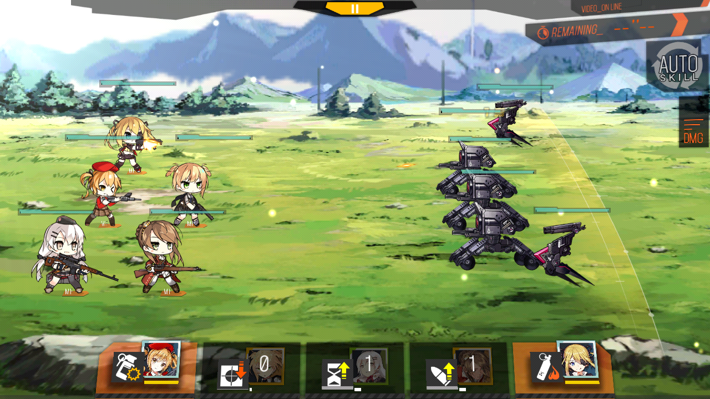
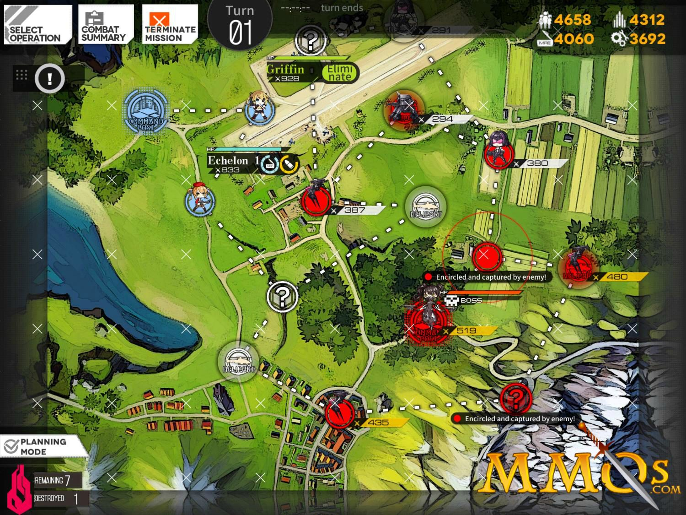
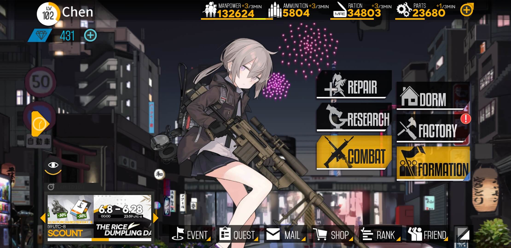
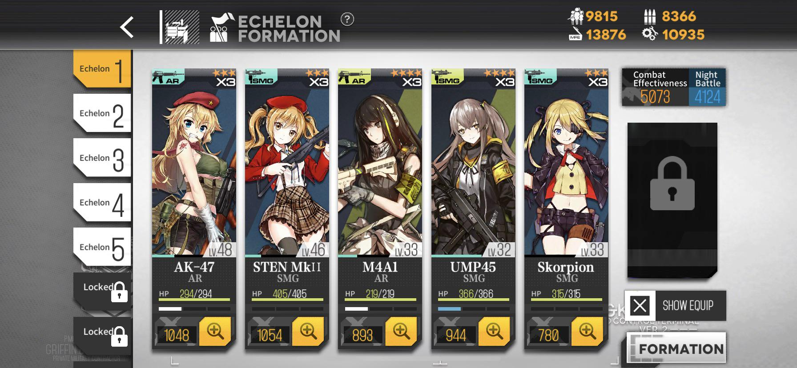
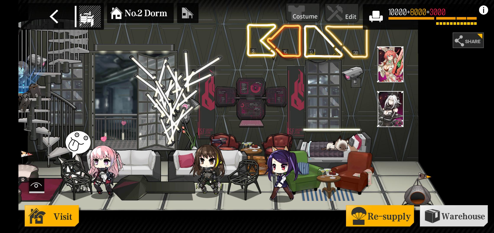

Girls' Frontline is a turn-based strategy game with gacha and resources management components for Apple and Android smartphones developed by Sunborn in partnership with Vanguard Sound, Criware and Live2D. The main concept of Girls' Frontline is to have the players collect Tactical Dolls, feminine androids named after the real-world firearm they are using, depicted and voiced by an expansive cast of artists and actors.
Gameplay
The gameplay involves the acquisition of T-Dolls through gacha game mechanics, which can then be assembled into squads known as echelons, and sent into battle to complete combat missions, simulations, or logistics support tasks. The T-Dolls are female moe androids each specialising in and inspired by one real-world small arm, which are categorised into combat classes such as handguns, submachine guns, assault rifles, sniper rifles, machine guns and shotguns.

Missions and Movement
Missions consist of a turn-based strategy puzzle where the player directs echelons across a map consisting of linked nodes, with the goal of fulfilling pre-determined mission requirements, such as capturing an enemy command node or rescuing hostage units. Players are able to deploy, move and retreat echelons during their turn by expending action points, and likewise, the AI-controlled enemy team is able to move units during enemy turns. If a player's echelon meets an enemy unit on the same node, a combat sequence is initiated; combat is largely automated, and involves the player activating offensive and defensive skills specific to each T-Doll in real-time, along with moving individual T-Dolls across a formation consisting of a 3×3 square grid. The position of T-Dolls within the echelon's starting formation provide stat enhancements to other T-Dolls, and the individual stats and abilities of the T-Dolls altogether determine the outcome of the battle against the enemy team.
Obtaining Characters
Additional T-Dolls are acquired through random drops after battles, or through the construction component of the game, where the player inputs a desired allotment of in-game resources to construct new T-Dolls, and the amount of resources set affects the chance of different T-Dolls being constructed through the gacha mechanic. T-Doll stats can be complimented by equipment, which are also obtained via a gacha-based construction system.


Player Hub
- Event - Displays current game event information / system notices / login rewards
- Restore - Repair menu for damaged T-Dolls
- Research - Trains T-Doll skills for higher activation chances and effects (Unlocked via storyline missions)
- Factory - Producing, power-ups, dummy linking, and retiring menu for T-Dolls and equipment

Player Hub - 2
- Combat - Mission, logistic support, combat simulation and in-game event selectio
- Formation - Combat echelons and formation assembly menu
- The squad leader of the first combat echelon will be displayed on the main menu
- Tapping on her will trigger dialog and voices (When applicable)
- Also displays repairs, logistic support, research completion notifications

Quests / Tasks - Daily and weekly quests
Mail - Displays new messages from the development team about maintenance, also contains rewards for events and other specials
Shop - Accesses in-game diamond / cash shop
Gallery - Shows stats, CG and other information for obtained T-Dolls
Options - Access system options